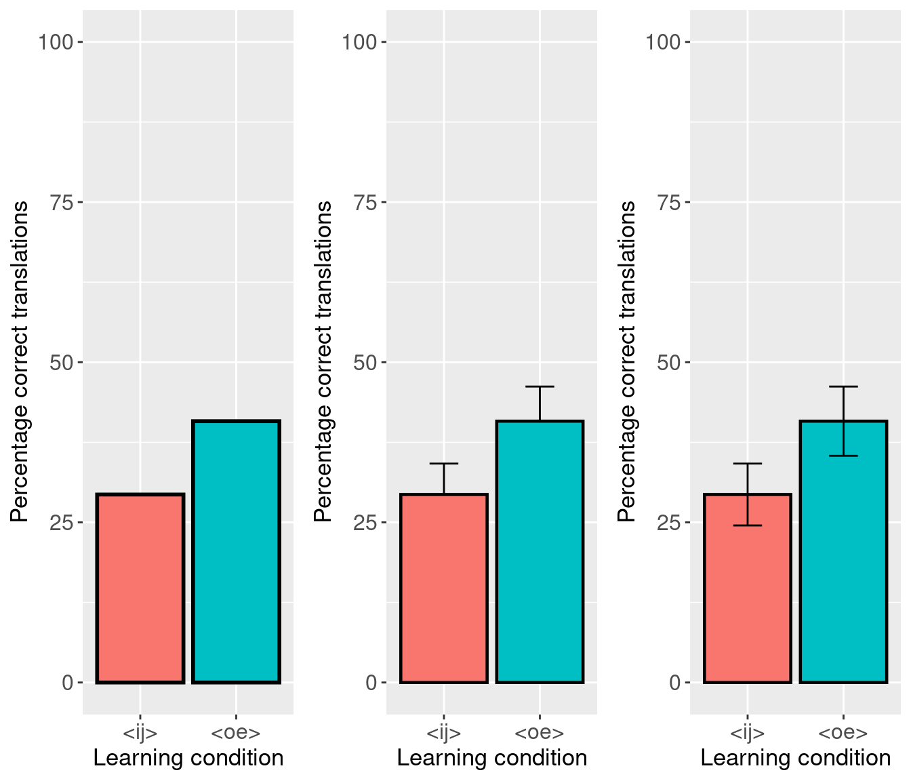
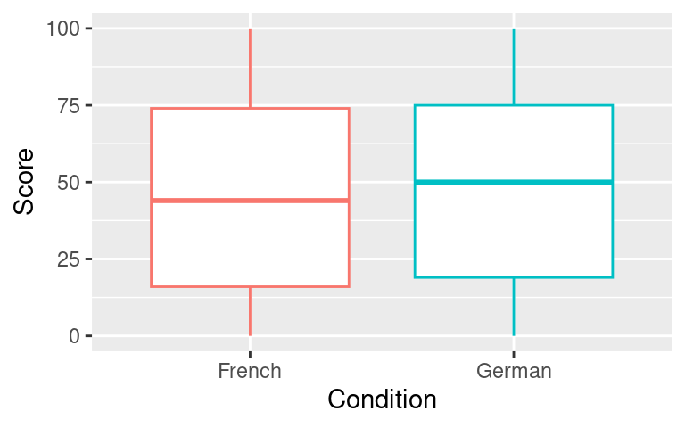

Bar plots. They often deliver the main result of empirical studies, be it at conferences or in journal articles, by proudly showing that the mean score, reaction time etc. in one group is a notch higher than in the other. But the information that bar plots convey is limited and sometimes downright misleading. In this post, I suggest some alternatives you can use in your next presentation or paper.
What’s wrong with bar plots?
Just to be clear: the bar plots I’m arguing against in this post are those that show the average result for each group, possibly complemented with confidence bars, but nothing more. Below are three examples of such bar plots. They summarise the results of one part of a learning experiment in which participants were assigned to one of two learning conditions (‘ij’ or ‘oe’, but it doesn’t really matter for this post) and then tried to translate a number of critical words in an unknown but related language. The question of interest is whether participants in one learning condition outperform participants in the other.
The bar plot on the left shows the mean percentage of correctly translated critical words per participant for each learning condition. The plot in the middle additionally shows the upper limits of the means’ 95% confidence intervals; this type of plot is often referred to as a dynamite plot. The one on the right, finally, shows both the upper and lower limits of the 95% CIs.
Update (2023-08-26): I didn’t include the R code in the original blog post but instead linked to a separate document. I’ve now slightly modified the code so that it runs without hiccoughs with the present software versions and I now just show the code in the blog post. The first code snippet isn’t too important, as I will suggest that you don’t draw such plots.
# Load packageslibrary(tidyverse) # for working with datasets and plottinglibrary(gridExtra) # for creating side-by-side plots# Read in datadat <-read_csv("http://janhove.github.io/datasets/correspondencerules.csv")# Rename learning condition levelsdat <- dat |>mutate(LearningCondition =ifelse(LearningCondition =="ij-ei", "<ij>", "<oe>"))# Divide data into training and test part# only retaing critical items on non-training partdat_post_critical <- dat |>filter(Block !="Training") |>filter(Category %in%c("oe cognate", "ij cognate"))# Figure 1# Step 1: summarise percentages per category per subject in a slightly different wayperSubjectCorrect <- dat_post_critical |>group_by(Subject, Category, LearningCondition) |>summarise(Correct =100*mean(Correct =="yes"),CorrectVowel =100*mean(CorrectVowel =="yes"),.groups ="drop" ) |>mutate(Category =ifelse(Category =="ij cognate","<ij> cognates","<oe> cognates"))# Step 2: draw plotgp <- perSubjectCorrect |>filter(Category =="<oe> cognates") |>ggplot(aes(x = LearningCondition, y = Correct)) +guides(fill ="none", colour ="none") +theme(axis.text.x =element_text(size =12),axis.title.x =element_text(size =13),axis.text.y =element_text(size =12),axis.title.y =element_text(size =13),strip.text.x =element_text(size =16)) +ylim(0, 100)gp1 <- gp +stat_summary(fun = mean, geom ="bar", position ="dodge", mapping =aes(fill = LearningCondition), color ="black", linewidth =1) +guides(fill ="none", colour ="none") +xlab("Learning condition") +ylab("Percentage correct translations")# Compute confidence boundslowCI <-function(x) {t.test(x)$conf.int[1]}hiCI <-function(x) {t.test(x)$conf.int[2]}gp2 <- gp +stat_summary(fun = mean, geom ="bar", position ="dodge", mapping =aes(fill = LearningCondition), color ="black", linewidth =0.8) +stat_summary(fun = mean, fun.min = lowCI, fun.max = hiCI, geom ="errorbar", position ="dodge", colour ="black", width =0.3) +xlab("Learning condition") +ylab("Percentage correct translations")gp3 <- gp +stat_summary(fun = mean, geom ="bar", position ="dodge", mapping =aes(fill = LearningCondition), color ="black", linewidth =0.8) +stat_summary(fun = mean, fun.min = mean, fun.max = hiCI, geom ="errorbar", position ="dodge", colour ="black", width =0.3) +xlab("Learning condition") +ylab("Percentage correct translations")grid.arrange(gp1, gp3, gp2, ncol =3)

While the tidiness of these three plots is appealing (you run your study, calculate the means and CIs, et voilà), the information they convey is limited to the group means and a measure of uncertainty about these means. The bar plots don’t disclose several snippets of crucial information: How many participants were there in each group? Roughly how large is the overlap between the two groups? And does the mean accurately convey the central tendency of the data?
After all, mean percentages of roughly 30 and 40 can correspond to any of a well-nigh unlimited number of wildly different patterns in the data: in principle, the bar plot on the left could correspond to a situation in which all participants have translated either 30 or 40% of the items correctly, to a situation in which 30 or 40% of the participants translated all items correctly and 70 or 60% none of them, and to pretty much anything in-between. Even the variants with the error bars can correspond to pretty much anything from normally distributed data centred around 30 and 40%, over distributions with a couple of outliers to multimodal patterns (e.g. many participants with no correct translations, several participants around 50% and a handful with perfect scores). The dynamite plot is particular is a perennial target of criticism for a host of additional reasons (Update (2023-08-26): Link broken.). (Fittingly, it’s pretty difficult to get the ggplot2 graphical package for R to draw dynamite plots.)
Plot the raw data
The bar plot’s drawbacks can be avoided by adhering to one straightforward principle: show the raw data. You spent quite a bit of effort to collect it, so why not show it? If your data set is fairly small, you could just plot the raw values, as in the plot on the left; here, the data points are jittered horizontally to reduce the amount of overlap.
An alternative that I quite like is shown on the right. First, I draw boxplots (shown in the middle panel) for both groups and then I plot the individual data points on top of them. (If you do this, make sure you don’t plot outliers twice!) At a single glance, readers get an accurate sense of where the individual data points lie as well as where the quartiles of the data are situated.
The reason why I prefer to plot the individual data points rather than the naked box plots that more readers will be familiar with is that, much like bar plots, box plots can be deceptive. As an example, consider the box plots below (data courtesy of my colleague Ladina). (Update (2023-08-26): See the published article (Stocker 2017) for background.) With median scores of about 45-50, first and third quartiles more or less symmetrically around the median, dito hinges and no outlying points, these box plots evoke symmetric, unimodal and well-behaved (if not quite normal) distributions. On the basis of this plot, we’d be inclined to move on to t-tests and the like for our inferences.
ladina <-read_csv("http://janhove.github.io/datasets/ladina.csv")# Create SubjectID# Only consider French survey and statements of unknown truthfulnessladina <- ladina |>mutate(SubjectID =paste0(L1, ID),Survey =ifelse(L1 =="French", "French survey", "German survey")) |>filter(truthfulness =="notknown") |>filter(Survey =="French survey") |>filter(accent %in%c("French", "German"))lad1 <-ggplot(ladina,aes(x = accent,y = score,colour = accent)) +guides(fill ="none", colour ="none") +geom_boxplot() +xlab("Condition") +ylab("Score")lad1

However, the idea that these data are symmetrically and unimodally distributed is utterly wrong. In fact, the box plots fail to convey the most striking aspect of these data, viz. that scores around 50% are entirely atypical! As the histograms shown below reveal, scores of 0 and 100 occur far more often than anything in-between, so that both the mean and the median are poor summaries of the patterns in the data.
With nearly 3,000 observations, this data set is rather large, and plotting individual dots for each data point is probably inadvisable. However, we don’t need to restrict ourselves to computing summary data and plotting those: here are some alternatives that stay true(r) to the original data. The top left plot shows violin plots (which show the kernel density of the data) as well as the raw data as transparent dots. This plot requires a bit of fiddling (edit: This wasn’t intended as a pun, but it’s so bad I’ll keep it.) to underscore the heaps of observations at 0 and 100.
The top right consists of frequency polygons. These are essentially histograms in which the tops of the bars are connected and with the bars themselves removed. What I like about them in this case is that they convey the striking patterns in the data (the spikes at 0 and 100) and allow for a much better direct comparison of the two distributions than side-by-side histograms would.
On the bottom row, the empirical cumulative density functions of both conditions are directly compared. The left plot shows the default way of plotting ECDFs. The spikes at 0 and 100 in the histogram show themselves as steep (in fact: vertical) increases in the graphs. From this graph, you can also glean that a score of 20 corresponds to roughly the 25th quantile of the data in Condition 2 (turquoise, or as we say in Flanders: ‘apple-blue-sea-green’), i.e. 25% of the observations in Condition 2 are lower than 20. The red line is a bit higher at this point, indicating that about 29% of the observations in Condition 1 are lower than 20. Note that this means that the scores in Condition 1 tend to be lower than those in Condition 2.
As I find it counterintuitive that lower scores correspond to higher lines, the right plot shows the same ECDFs, but with the x- and y-axes flipped. From this graph, you can easily glean that the median (cumulative density of 0.50) is higher in Condition 2, and that this is in fact pretty much the case for all quantiles: the red line lies consistently under the apple-blue-see-green one. The spikes in the data now show themselves as flat (vertical) parts of the curves.
These graphs probably aren’t optimal, but they illustrate that it isn’t necessary to stick to bar and box plots to visually report results.
Wrap-up
While tidy and familiar, bar plots reveal little information about the data we’ve worked hard to collect, and even the trusted box plot can conceal their most striking aspects. I don’t think we should to stick to the default ways of graphically conveying our results. As a rule, plots that stay true to the original data – ideally by plotting the raw data points – are better plots.